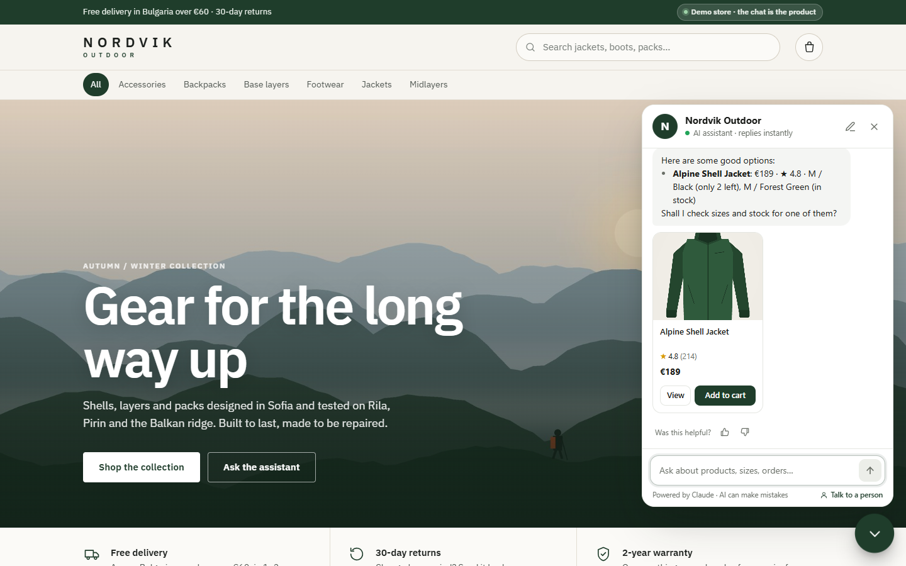

Engineered product search, offline intent router, grounded answers
# scripts/benchmark.py · 58 queries · 120 products · 527 labels search nDCG@5 legacy 0.589 → BM25F+synonyms+typos+filters 0.914 zero results 12.1% → 0.0% MRR 0.813 → 1.000 intent router dev 100% · held-out 86.7% (30 unseen turns) grounding 0 violations · detector recall 94%, 0% false pos. latency p50 router 2.4 ms · search 2.2 ms · full turn 3.7 ms
